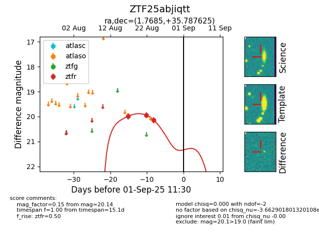

Target ZTF25abjiqtt at 2025-08-26 10:32, see:
FINK: fink-portal.org/ZTF25abjiqtt
Lasair: lasair-ztf.lsst.ac.uk/objects/ZTF25abjiqtt
ALeRCE: alerce.online/object/ZTF25abjiqtt
alt names
ZTF25abjiqtt (ztf,fink)
coordinates:
equatorial (ra, dec) = (1.7685,+35.78763)
galactic (l, b) = (112.9147,-26.21970)
photometry
last ztfr=20.14
3 ztfr detections
